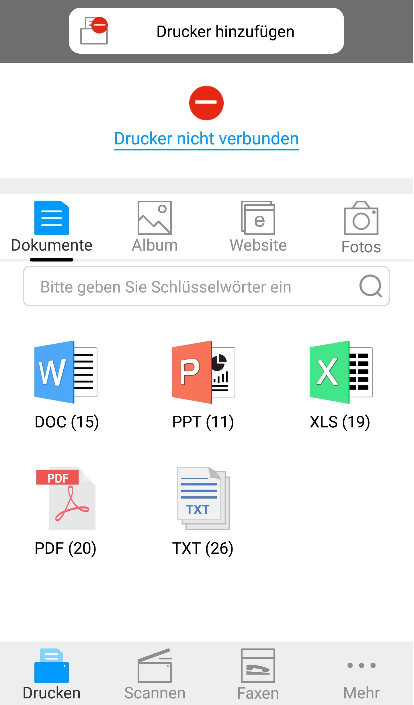

6. Mobiles Drucken bei Pantum
6.1. Was ist mobiles Drucken bei Pantum?
Mobiles Drucken bei Pantum ist eine kostenlose Anwendung, die Benutzern das direkte Drucken von Fotos, Dokumenten und Webseiten über das mobile Terminal ermöglicht. Der mobile Druck von Pantum ist auf dem mobilen Betriebssystem Android 4.0-8.0 mit einer Auflösung von 480 * 800dpi oder darüber und 3,5"-Bildschirm anwendbar. Die Anwendung verbindet Ihr mobiles Gerät über WLAN-Zugangspunkte mit dem Drucker. Sie müssen lediglich die Anwendung zum mobilen Drucken bei Pantum installieren, um die Netzwerkeinstellungen zu konfigurieren. Anschließend werden kompatible Drucker automatisch beim Drucken erkannt – eine sehr bequeme und effiziente Methode.
6.2. Mobiles Drucken bei Pantum herunterladen
Wenn Sie die Anwendung zum mobilen Drucken bei Pantum herunterladen möchten, besuchen Sie die offizielle Website von Pantum unter www.pantum.com.
6.3. Unterstütztes mobiles Betriebssystem
Android OS 4.4-8.0 angewendet.
6.4. Mobile Geräte für mobiles Drucken verwenden
6.4.1. Für Android-Geräte
6.4.1.1. Vorbereitung
1. Drucker mit drahtlosen Netzwerkfunktion.
2. Android bewegliches Gerät.
6.4.1.2. Betriebsschritte
1. Druckerstrum einschalten.
2. In dem Android Gerät klicken Sie auf das "PANTUM" Symbol auf der Hauptseite und dann wird die folgende Seite ausspringen.

3. Klicken Sie auf „Drucker hinzufügen“ am oberen Rand der Benutzeroberfläche und wählen Sie dann die Art, wie Sie den Drucker hinzufügen möchten.
4. Wählen Sie die Funktion, die Sie brauchen, und die entsprechenden Einstellungen vornehmen, um Ihre funktionale Anforderungen zu erfüllen.
 |
Hinweis: |
• Wenn der Vorgang fehlschlägt ist, überprüfen Sie, ob Ihr Android-Mobilgerät mit dem drahtlosen Netzwerk angeschlossen ist, der der Drucker benutzt hat. • Wenn das Android Gerät jeden Drucker nicht erkennen konnte, bitte überprüfen Sie, ob der Drucker mit dem Strum angeschlossen wird und ob der Drucker eingeschaltet wird. • Für weitere Details, lesen Sie bitte die beigefügte Bedienungsanleitung für das mobile Drucken. |